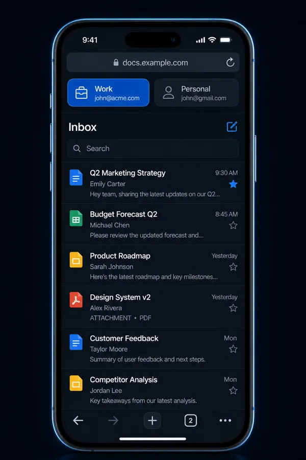

Parallel sandboxes—not endless logouts
Typical browsers keep one cookie jar per site. XBrowser gives Messaging, Shop, and Work their own Spaces so sessions do not overwrite each other.

Core product · Spaces
Each Space owns its cookies, cache, history, and bookmarks. Parallel logins on one device—fewer mixed sessions and wrong-account mistakes.
Typical browsers keep one cookie jar per site. XBrowser gives Messaging, Shop, and Work their own Spaces so sessions do not overwrite each other.
Sellers, social operators, or personal/work split: switch Spaces in one tap. History and bookmarks follow the identity you are in.

Use a dedicated work Space for email and docs. One tap on the Space chip switches you back—cookies and home stay separate too.

Add Face ID / PIN to a sensitive Space without locking everything.
Space Lock →Background play and Sleep Timer are available when you need them—built on top of Spaces.
Media extras →Free includes up to 3 Spaces—enough for personal, work, and one shop.
Create your first SpaceHow it works
Plain-language answers about the WebKit isolation that powers XBrowser Spaces.
Each Space is backed by its own WebKit website data store—Apple’s WKWebsiteDataStore with a unique identifier. Cookies, HTTP cache, and local storage for that Space live only in that store. When you switch Spaces, the web view uses a different store. It is real session isolation, not a label on a shared cookie jar.
Incognito typically uses a temporary, non-persistent store. Close those tabs and the session is discarded. Useful for a one-off visit—but you cannot keep two long-lived logged-in accounts side by side. Spaces are persistent sandboxes: each login stays signed in until you clear that Space, and switching does not overwrite the other Space’s cookies.
Clone / dual-open helpers often sit outside the App Store trust model and can ask for broad permissions. Constant logout/login is slow and easy to mess up. Spaces keep isolation inside a normal browser: one app, separate WebKit data stores, optional Space Lock—without mixing sessions.
No. Spaces isolate cookies and site data on your device. They do not change your network IP or claim anti-detect browser behavior. For honest multi-account browsing, cookie isolation is the core product.
Read Why Incognito isn’t enough—or browse use-case guides for WhatsApp, shops, and work/personal splits.